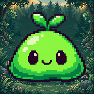
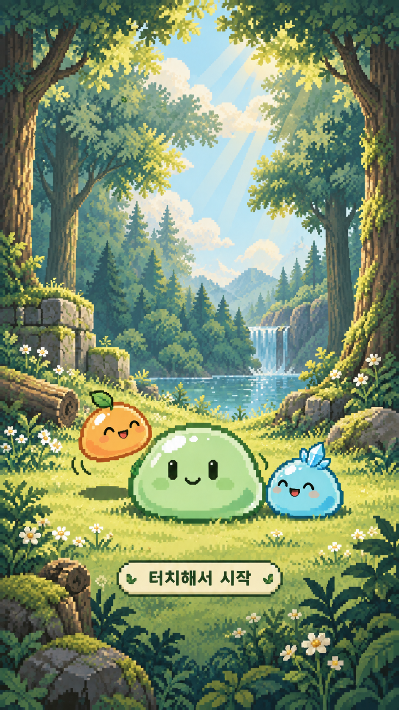
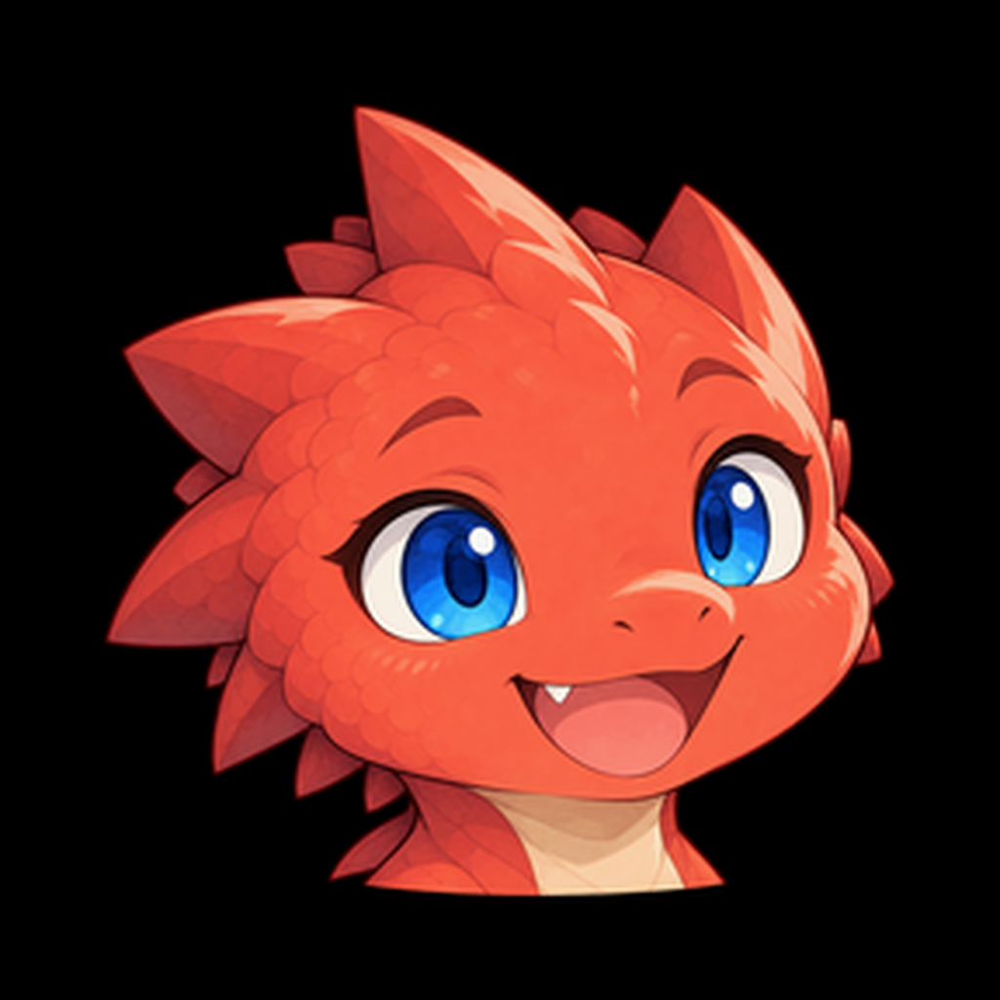
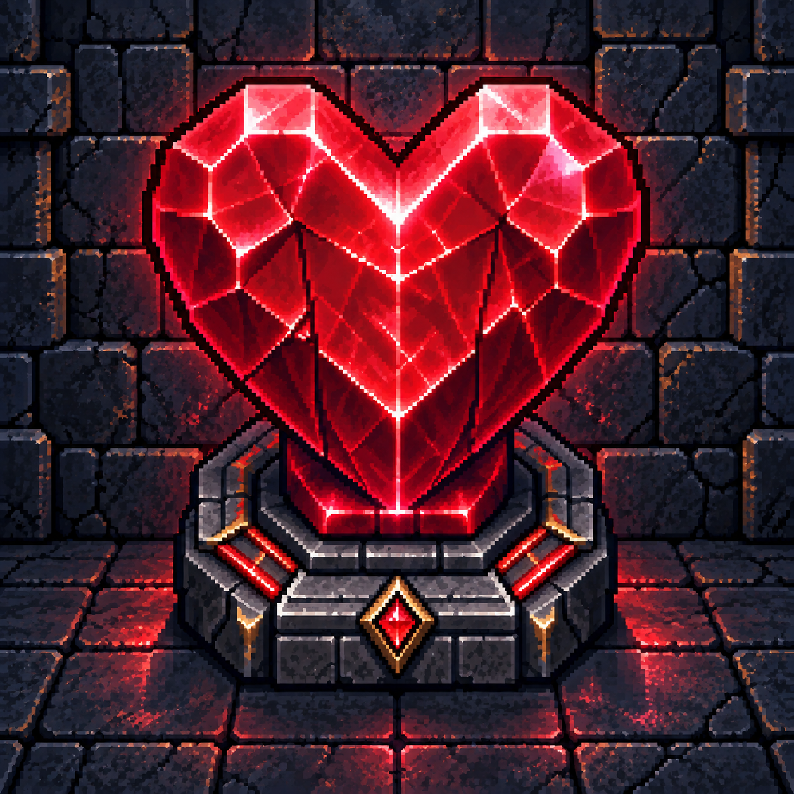
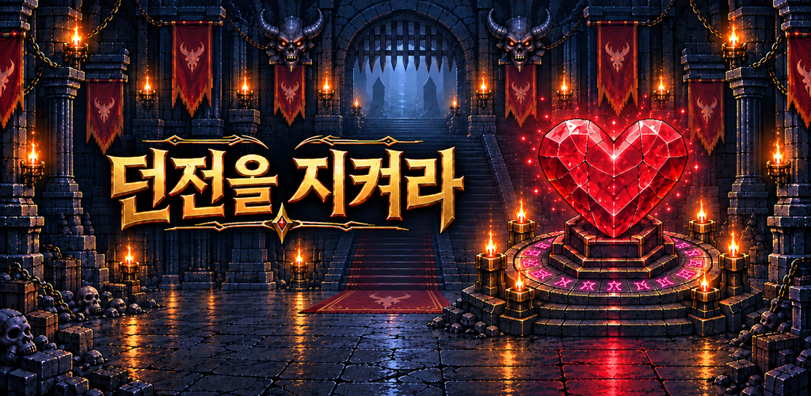
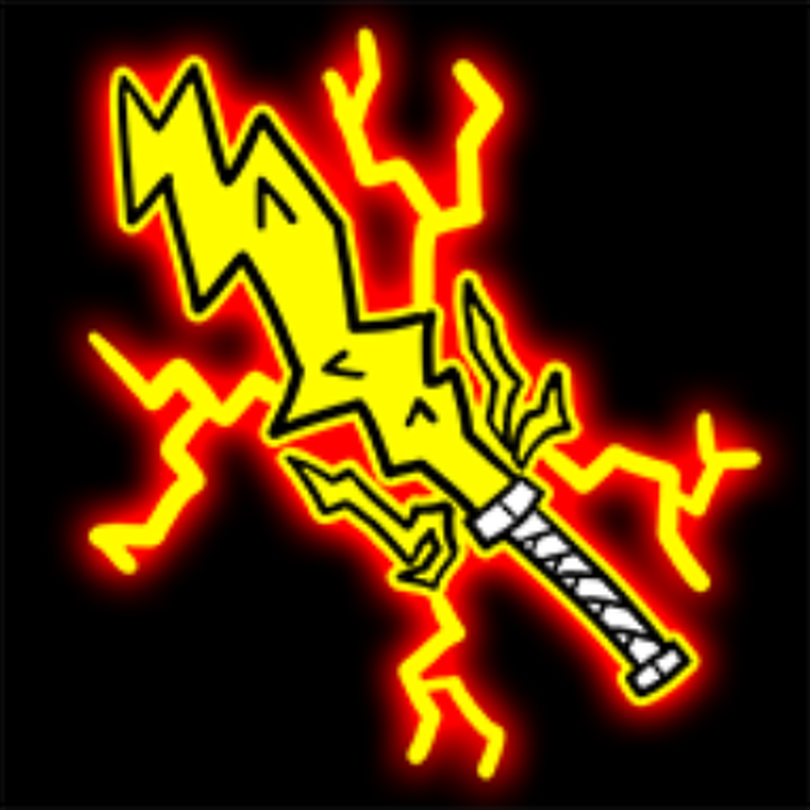
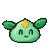

슬라임 키우기
작은 만남을 모아, 더 특별한 친구로.
- 발견하는 즐거움
- 40종 도감
- 루나와 몰랑이의
- 27편 이야기
- 나만의 원정대
- 5마리까지
같은 슬라임을 합쳐 새로운 친구를 만나고, 나만의 팀으로 전투에 도전하세요. 마녀 루나와 몰랑이의 이야기, 미사일 피하기까지 아기자기한 픽셀 세계에서 함께 성장해요.
옆으로 넘겨 게임 화면을 살펴보세요. 화면을 누르면 크게 볼 수 있어요.
화면을 선택하면 더 크게 볼 수 있어요.
INDEPENDENT GAME STUDIO
합치고, 성장하고, 끝까지 지켜내고.
제라온이 만드는 각기 다른 모험을 만나보세요.
합치고, 모으고, 함께 성장하는 즐거움.
픽셀 속에서 시작되는 작은 모험을 만나보세요.


작은 만남을 모아, 더 특별한 친구로.
같은 슬라임을 합쳐 새로운 친구를 만나고, 나만의 팀으로 전투에 도전하세요. 마녀 루나와 몰랑이의 이야기, 미사일 피하기까지 아기자기한 픽셀 세계에서 함께 성장해요.
옆으로 넘겨 게임 화면을 살펴보세요. 화면을 누르면 크게 볼 수 있어요.
화면을 선택하면 더 크게 볼 수 있어요.
02 / STORY ADVENTURE

돌아갈 길을 찾아,
낯선 세계로.
차원의 틈을 넘어 낯선 세계에 도착한 작은 용 리아.
새 친구 루체와 함께, 집으로 돌아갈 길을 찾아보세요.
STORY · EXPLORATION · LANDSCAPE
들어가지 말라는 동굴을 탐험하던 리아에게 찾아온 뜻밖의 여행. 마을과 숲, 왕궁을 걸으며 새로운 친구들을 만나고, 대화 속에서 다음 여정의 단서를 찾아보세요. 따뜻한 만남 사이로 긴장감 있는 도전이 기다립니다.
마을의 작은 길부터 숲과 왕궁까지. 리아를 직접 움직이며 다음 목적지와 새로운 만남을 찾아가세요.
루체와 촌장, 숲속의 마녀까지. 인물들의 이야기를 듣고, 집으로 돌아갈 단서를 따라 모험을 이어가세요.
날아오는 표창을 피해 30초를 버티는 회피 도전. 리아의 움직임에 집중하며 마지막 순간까지 살아남으세요.
이동과 공격을 조합해 보스에 맞서세요. 친구들과 함께 이어온 여정에, 직접 돌파하는 도전이 더해집니다.
A LOOK INSIDE RIA'S ADVENTURE
탐험과 대화, 도전의 순간을 만나보세요.
화면을 누르면 더 크게 볼 수 있어요.
옆으로 넘겨 모험의 장면을 살펴보세요. 화면을 누르면 크게 볼 수 있어요.
실제 게임 플레이 화면입니다.
03 / PIXEL DEFENSE

침입자는 용사,
수호자는 몬스터.
몬스터를 소환하고 각성시키며
붉은 던전하트를 지키는 픽셀 아트 디펜스.
MOBILE · PORTRAIT · PIXEL ART

모험가가 밀려오는 던전에서 나만의 몬스터들과 방어를 준비하세요. 자동으로 이어지는 전투 속에서 소환과 강화, 각성 특성, 공격 우선순위를 조합해 더 먼 일차에 도전합니다.
승리하면 다음 일차로, 실패하면 같은 일차에 다시 도전합니다. 10일마다 찾아오는 보스에 대비하세요.
서로 다른 공격 방식을 가진 10종의 몬스터. 소환과 강화, 공격 우선순위 설정으로 나만의 방어를 완성하세요.
최대 10차 각성에서 단계마다 두 가지 특성 중 하나를 선택합니다. 완료한 단계의 선택은 다시 바꿀 수 있어요.
보호막·충격파·긴급 회복 중 하나를 장착하세요. 체력과 재생력을 강화하고 위기의 순간에 대비하세요.
A LOOK INSIDE THE DUNGEON
전투부터 각성까지, 화면을 눌러 살펴보세요.
옆으로 넘겨 화면을 살펴보세요.
화면 미리보기 · 실제 게임 자산과 UI로 구성했습니다.
04 / ONE MORE UPGRADE

한 번만 더,
전설의 검까지.
주운 나뭇가지에서 시작하는 작은 도전.
터치로 강화하고, 골드를 모아 더 높은 단계에 도전하세요.
UPGRADE · COLLECT · TRY AGAIN
지금 팔아서 골드를 모을까, 한 번 더 강화해 볼까? 성공할 때마다 달라지는 무기를 발견하고, 스킬과 보조 아이템으로 다음 도전을 준비하세요. 나만의 최고 기록과 무기 도감을 하나씩 채워가는 캐주얼 강화 게임입니다.
한 단계씩 강화하며 새로운 모습의 무기를 만나보세요. 주운 나뭇가지부터 최종 무기까지, +50을 향해 최고 기록을 높여보세요.
강화에 투자하거나 무기를 팔아 골드를 모으세요. 더 높은 단계에 도전할지, 다음 도전을 준비할지 선택하는 재미가 있습니다.
성공률, 판매 가격, 강화 비용을 돕는 세 가지 스킬. 강화보조석과 기회의 별을 함께 준비해 더 높은 단계를 노려보세요.
개성 넘치는 무기를 발견하고 도감을 채워보세요. 강화 단계 목표를 달성하며 골드와 아이템 보상도 받을 수 있습니다.
A LOOK INSIDE SWORD UPGRADE
게임의 시작부터 강화와 준비까지.
화면을 누르면 더 크게 볼 수 있어요.
옆으로 넘겨 게임 화면을 살펴보세요. 화면을 누르면 크게 볼 수 있어요.
실제 게임 플레이 화면입니다.
게임 이용 중 불편한 점이나 궁금한 내용을 알려주세요. 오류 신고, 광고 보상, 보석 구매 관련 문의를 보내실 수 있습니다.
bjc6098@gmail.com비밀번호나 카드번호 등 민감한 정보는 포함하지 마세요.
슬라임 키우기를 즐기며 자주 궁금해하시는 내용을 모았어요.

슬라임 키우기의 게임 진행은 사용 중인 기기에 저장됩니다. 현재 별도 계정 기반 클라우드 저장이나 기기 간 동기화 기능은 제공하지 않습니다.
앱 삭제나 앱 데이터 초기화 시 진행 정보가 사라질 수 있습니다. 저장과 관련된 문제가 있다면 현재 상태를 유지한 채 문의해주세요.
네트워크 연결과 스토어 구매 내역을 확인한 뒤 앱을 다시 실행해주세요. 승인 대기 중인 결제는 승인이 완료된 후 지급됩니다.
계속 지급되지 않으면 상품명, 결제 시각, 주문·거래번호를 적어 문의해주세요.
iPhone·iPad에서 구매한 항목은 Apple 환불 안내 ↗를, Android에서 구매한 항목은 Google Play 환불 안내 ↗를 확인해주세요.
환불 가능 여부는 해당 스토어의 정책과 심사에 따릅니다. 구매 확인에 도움이 필요하면 고객지원으로 문의해주세요.
인터넷 연결을 확인하고 잠시 후 다시 시도해주세요. 광고 준비 상태에 따라 바로 표시되지 않을 수 있습니다. 보상형 광고는 광고에서 보상 획득이 확인된 경우 지급됩니다.
문제가 반복되면 광고를 본 시각, 이용한 화면, 기기 정보를 함께 보내주세요.
이야기는 새로운 단계의 슬라임을 발견하고 앞선 이야기를 완료하면 순서대로 열립니다. 이전 이야기의 보상까지 받았는지 확인해주세요.
상점에서 보석으로 해당 기능을 해금하고 강화할 수 있습니다. 해금한 뒤에는 게임 화면의 자동 소환·자동 합체 버튼에서 켜거나 끌 수 있어요.
제라온 게임스튜디오는 한 번 더 플레이하고 싶은 경험을 목표로 모바일 게임을 만듭니다. 게임의 재미에 집중하며, 플레이 속에 작은 모험을 담아갑니다.